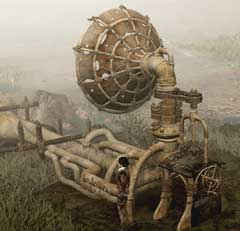
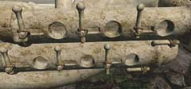

| 概要 | 地図 |
| 淡いヒント集 | ヒント集 | 的確なヒント集 |
| 攻略最短ルート |
| 場所選択に戻る |
シベリア
|
マンモスを呼ぶために
扉を開くと、ハンスはまた奥へ奥へと行ってしまう。また、ユーキーは眠ってしまい動こうとしない。あなたは、ハンスを追いかけて行かなければならない。 次にあなたがやらなければならないことは、 ・マンモスを呼ぶ ということだけである。 
・まず目に付くのはこの装置だろう。 ・この装置は何に使うものなのだろうか? ・装置の下を見ると、奇妙な模様が刻まれている ・いくつかの部分が欠けている ・石版がそばにあるが、まだ足りない ・では、石版はどこに置けばいいか? どこにヒントがあるか?

・次に目に付くのはこの巨大なスピーカーである ・このスピーカーには6つの穴と、奇妙な箱とハンドルがある

・6つの穴は開いている状態、半開き、閉じている状態に調節できる ・どこかで6つの何かを見たことはないだろうか? 
・箱のフタを開けるとこのようなものが出てくる。 ・どうすれば開くのか? ・また、この穴には鍵をはめることができる。どの穴にはめればよいか? ・先ほどの砂の出る装置との関連はあるか?
| << 前へ |
|
| 場所選択に戻る |
| 概要 | 地図 |
| 淡いヒント集 | ヒント集 | 的確なヒント集 |
| 攻略最短ルート |
Syberia II
| 目次へ戻る | ページの上部へ |